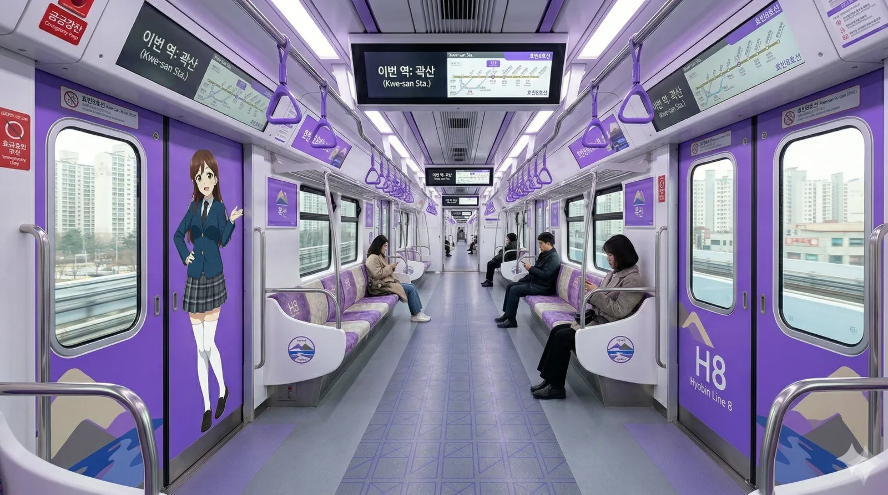
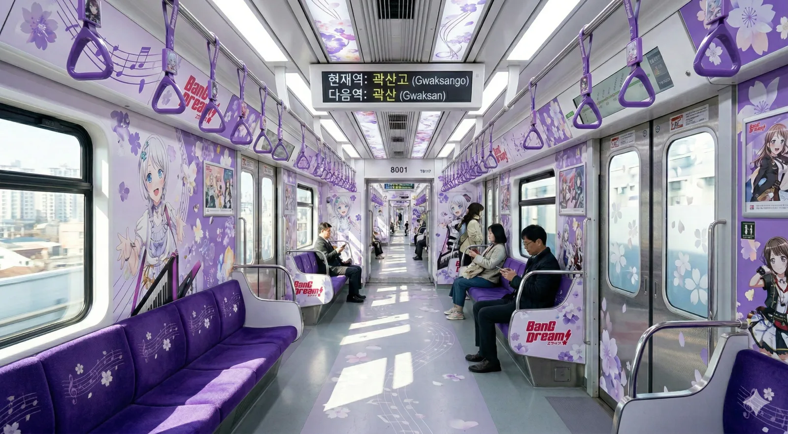

효빈교통공사 8000호대 전동차
1. 개요
"효빈 남부의 새로운 발, 보랏빛 고무차륜 열차"
1호선과 나란히 달리는 꼬마 레이서
효빈교통공사가 효빈 도시철도 8호선에서 운용 중인 경전철 차량이다.

▲ 고가 선로를 시원하게 질주하는 8000호대 전동차. 연보라색 도색과 유선형 전두부가 돋보인다.
2024년 3월 4일 8호선 본선 개통(곽산~신흥)과 함께 도입된 가장 최근에 도입된 막내 전동차이다. 노선 색상은 연보라색(#9856FF)으로, 6호선의 짙은 보라색과 차별화되는 신비롭고 톡톡 튀는 느낌을 준다.
효빈시 남부 지역(평당신도시, 곽산동 등)의 대중교통난 해소를 위해 주민들이 분담금까지 내면서 유치한 노선인 만큼, 개통과 동시에 폭발적인 이용률을 보이고 있다. 4량 1편성으로 운행되며, 총 26편성이 재적되어 있다. 막내답게 차량 내부에는 USB 충전 포트와 와이드 LCD 안내기 등 최신 편의 사양이 아낌없이 들어가 있다.
2. 특징 및 상세 차량 사양
- K-AGT (고무차륜 무인경전철) 시스템: 철제 차륜 대신 특수 제작된 고무 타이어를 사용하여 주행 소음이 극단적으로 적고 승차감이 부드럽다. 평당신도시 등 주거 밀집 지역의 고가 선로를 통과하기 때문에 소음 민원을 원천 차단하기 위해 채택된 최적의 방식이다. 곡선 반경이 좁은 구간에서도 유연하게 대처할 수 있다.
- 폭발적인 가감속 능력: 최고 영업 속도는 55km/h로 겉보기엔 다소 느려 보이지만, 고무차륜 특유의 미친 접지력을 바탕으로 가속도와 감속도가 모두 3.5 km/h/s에 달한다. 역간 거리가 평균 580m로 매우 짧은 8호선 환경에 맞춰, 출발하자마자 최고 속도에 도달하고 역 직전에 급제동하여 표정속도(26.3km/h)를 확보하는 이른바 '꼬마 레이서' 세팅이 적용되어 있다.
- 최첨단 편의 사양: 최신 도입분답게 객실 내부 시설이 화려하다. 각 출입문 상단에는 노선도와 도착역 정보를 듀얼로 띄워주는 와이드 풀컬러 LCD 안내기가 설치되어 있으며, 객실 좌석 하단과 측면 기둥 곳곳에 승객용 고속 충전 USB 포트가 마련되어 있다. 또한 초미세먼지까지 걸러내는 고성능 공기청정기가 차량당 2대씩 천장에 내장되어 있다.
- 완전 무인 운전 (CBTC 기반 ATO): 운전실 벽이 아예 존재하지 않는 완전 무인 운전 시스템을 자랑한다. 전면과 후면이 대형 통유리로 시원하게 뚫려 있어, 마치 롤러코스터 맨 앞자리에 탄 것 같은 탁 트인 시야를 제공한다. 동네 꼬마들과 철도 동호인들의 치열한 '명당 쟁탈전'이 벌어지는 원인이기도 하다.
- 전천후 주행 설계 (열선 내장 궤도 대응): 고무차륜의 유일한 단점인 겨울철 눈길 미끄러짐을 방지하기 위해, 8000호대는 궤도 바닥에 설치된 스노우 멜팅(열선) 시스템과 완벽히 연동되도록 설계되었다. 폭설이 쏟아져도 궤도가 실시간으로 녹아내려 타이어의 접지력을 100% 유지하며 지연 없이 달릴 수 있다.
3. 배속 및 운용
효빈 도시철도 8호선의 모든 차량은 1호선 기지인 곽산차량사업소에 더부살이(?)를 하고 있다.
곽산차량사업소 (Kwaksan Depot)
"중전철과 경전철의 이색적인 동거"
1호선(중전철)과 8호선(경전철)이 한 울타리 안에 있다. 8호선 곽산역에서 분기되는 1.7km 전용 인입선을 타고 들어온다.
매일 벌어지는 레이싱: 인입선이 1호선 본선과 나란히 있어, 1호선 10량 열차와 8호선 4량 꼬마 열차가 나란히 달리는 진풍경이 펼쳐진다.
바닷가 근처라 염분에 취약하지만, 고무타이어라 차륜 부식 걱정은 덜하다.
4. 승하차 통계
- 최다 이용역: 남구청역 (일평균 13,822명) - 1호선, 4호선 환승역이자 행정 중심지.
- 최소 이용역: 부한역
- 2024년 기준 8호선 전체 일평균 승하차량은 126,993명으로, 경전철치고는 상당히 높은 수치를 기록하고 있다.
5. 여담 및 사건사고


- 막내의 특권, 래핑 열차: 가장 최근에 개통한 노선답게 효빈교통공사의 8호선 담당 마스코트인 유리아 래핑 열차가 절찬리에 운행 중이다. 신형 차량 특유의 깔끔한 외관에 17세 왈가닥 캐릭터인 유리아의 발랄한 일러스트가 시너지를 내어 남녀노소 가리지 않고 사진을 찍어가는 명물이 되었다.
- 지우개: 고무차륜 특유의 마찰음(끼이익)과 타이어 냄새 때문에 동호인들 사이에서는 '지우개'라는 별명으로 불린다. 역에 진입할 때마다 바닥을 닦는 듯한 소리가 난다.
5.1. 기적의 논리 "고무바퀴에서 철가루가 날린다"와 포르쉐 길막 사건
8000호대가 도입되기 전, 이 작고 귀여운 꼬마 열차는 하마터면 세상의 빛을 보지 못할 뻔했다. 남구 평당 아르티엠 펜트하우스에 거주하던 악질 님비 정치인 우신면 전 의원이 고가 철도 건설을 전면 백지화하려 했기 때문이다. 그는 자신의 고급 아파트 테라스 뷰가 망가진다는 핑계로 주민들을 선동했고, 포르쉐와 BMW 수십 대를 동원해 8호선 굴삭기 진입로를 틀어막는 엽기적인 불법 시위를 주도했다. 특히 우신면이 국정감사장에서 "고가 철도가 지나가면 쇳소리와 철가루가 날려서 호흡기를 위협한다!"고 주장한 대목은 전설로 남았다. 8000호대는 철제 차륜이 아닌 고무 타이어로 콘크리트 바닥을 달리는 K-AGT 방식인데, 고무가 마찰해서 철가루가 생성된다는 '기적의 연금술'을 설파한 것이다. 이 무식함이 전국에 생중계되면서 8000호대와 우신면은 뗄래야 뗄 수 없는 코미디의 주역이 되었다.
5.2. 전대미문의 2D 캐릭터(유리아) 고소 촌극과 학폭 아빠의 최후
8000호대를 상징하는 마스코트 캐릭터 '유리아'는 억울하게 고소장 피의자란에 이름을 올릴 뻔한 전무후무한 기록을 가졌다. 우신면의 8호선 백지화 횡포에 분노한 오타쿠 팬덤(그리고 고정민 의원의 장남)이 '유리아가 몽키스패너로 우신면의 선거 현수막을 부수는 밈'을 만들어 퍼뜨린 것이 발단이었다. 이 밈을 본 우신면의 늦둥이 아들(악질 학교폭력 가해자)이 자기 아빠에게 일러바치자, 눈이 돌아간 우신면은 경찰서로 달려가 "피의자 인적사항에 '유리아 (17세, 2D 캐릭터)'를 적어달라"며 명예훼손 고소를 강행하려다 경찰관을 벙찌게 만들었다. 이 촌극을 계기로 우신면 아들의 극악무도한 학교폭력 사실까지 언론에 싹 다 까발려졌고, 결국 우신면은 선거에서 20.50%라는 치욕적인 득표율을 기록하며 고정민 의원에게 완전히 짓밟혀 정치 생명이 끝장나고 말았다. 8000호대의 마스코트가 부패 정치인을 날려버린 셈이다.
5.3. 고정민 의원의 '노선도 팩폭'과 개통식 첫 열차의 눈물
"8호선은 지하철이 아니라 버스로 충분하다"는 망언을 일삼으며 공사를 지연시키던 우신면을 향해, 당시 이웃 지역구였던 고정민 의원이 꺼내든 최후의 일격은 바로 '8호선 노선도 패널'이었다. 우신면이 "남의 지역구 사업에 간섭 말라"고 핏대를 세우자, 고 의원은 기자회견장에서 패널을 들이밀며 "우 의원님, 8호선은 제 지역구인 남구 을도 정통으로 관통합니다만?"이라며 뼈 때리는 팩트 폭격을 날렸다. 자기 동네 철도 노선조차 파악 못 한 우신면의 무능함이 까발려진 이 사건 이후, 고정민은 우신면의 지역구로 자객 출마를 단행해 압승을 거뒀다. 2024년 3월 4일, 숱한 방해 공작을 뚫고 마침내 개통된 8000호대의 첫 열차 맨 앞자리에 탑승한 고정민 의원과 박효빈 시장이 벅찬 감정에 몰래 눈물을 훔치는 장면은 효빈시 철도 역사상 가장 뭉클한 명장면으로 손꼽힌다.
5.4. 시선을 강탈하는 유리아 특별 래핑 열차 내부의 위엄

▲ 8000호대 유리아 특별 래핑 열차 내부. 연보라색 톤앤매너와 유리아의 청순한 교복 일러스트가 완벽한 조화를 이룬다.
효빈교통공사의 무서운 캐릭터 푸쉬를 증명하듯, 8000호대 유리아 래핑 열차의 내부는 밖에서 보는 것 이상의 압도적인 퀄리티를 자랑한다. 객실 내부는 노선 테마에 맞춰 좌석부터 손잡이, 출입문, 천장까지 눈이 편안해지는 연보라색으로 화사하게 도배되어 있다. 특히 출입문과 벽면 사이사이에 단정한 네이비 블레이저와 하얀 오버니삭스를 신은 유리아의 전신 일러스트가 큼지막하게 인쇄되어 있어, '기계공고 소속의 걸어 다니는 몽키스패너'라는 왈가닥 설정과는 극도의 인지부조화를 일으키며 승객들의 시선을 강탈한다. 열차 맨 앞쪽 무인 운전 전망석 쪽에는 "조작반을 뜯어보지 마세요"라는 유리아의 애교 섞인(경고) 홀로그램 스티커까지 붙어 있어, 이 열차에 타면 출퇴근길의 피로를 잠시나마 잊고 카메라 셔터를 누르게 된다는 간증이 쏟아지고 있다.
5.5. 파스텔 톤의 화사한 벚꽃길, 와카미야 이브 래핑 열차 내부

▲ Pastel*Palettes 와카미야 이브 래핑 열차 내부. 흩날리는 벚꽃잎과 아이돌 무대 같은 인테리어가 압권이다.
애니메이션 'BanG Dream!'과의 대규모 콜라보레이션으로 탄생한 와카미야 이브 래핑 열차의 내부는 그야말로 움직이는 아이돌 라이브 식장이다. 8호선의 연보라색 아이덴티티와 이브의 옅은 보라색 헤어 컬러가 완벽한 조화를 이루는 가운데, 객실 천장과 바닥 전면을 화사한 벚꽃잎과 음표 데칼로 수놓아 탑승하는 순간 기분이 좋아지는 마법을 부린다. 벽면에는 Pastel*Palettes 멤버들의 화려한 무대 의상 일러스트가 가득 채워져 있으며, 출입문이 열리고 닫힐 때마다 이브 성우(하타 사와코)의 목소리로 "다음 역에서도 부시도(武士道) 정신으로 안전하게 모시겠습니다!"라는 기상천외한 안내 방송이 흘러나와 서브컬처 팬들은 물론 일반 시민들까지 빵 터지게 만든다. 우신면이 "미관을 해친다"고 저주했던 8호선이 효빈시에서 가장 예쁘고 힙한 이동형 팝업스토어로 거듭난 완벽한 카운터펀치다.
5.6. 8호선 개통식 특란 30구 투척 미수 사건과 빤스런
2024년 3월 4일, 우신면의 끝없는 방해 공작을 이겨내고 열린 8호선 개통식 현장은 축제와 분노가 공존하는 아수라장이었다. 염치도 없이 자기가 백지화하려 했던 8호선 개통식에 우신면이 선거용 붉은 점퍼를 입고 귀빈석 맨 앞줄에 떡하니 앉아 표를 구걸하고 있었기 때문이다. 이를 본 50대 남성 주민이 분노를 참지 못하고 "양심이 파쇄기에 갈렸냐!!"라고 사자후를 내지르며 가방에서 '특란 30구'짜리 계란 한 판을 통째로 꺼내 단상을 향해 돌진하는 영화 같은 사태가 벌어졌다. 현장에 있던 경찰들이 필사적으로 몸을 날린 덕분에 우신면의 정수리에서 스크램블 에그가 만들어지는 참사는 피했지만, 수백 명의 시민들이 일제히 쏟아내는 쌍욕과 야유 세례에 겁을 먹은 우신면은 수행원들 뒤에 숨어 쥐새끼처럼 도망쳐야만 했다. 8000호대의 첫 출발은 그렇게 부패 정치인의 빤스런과 함께 유쾌하게 시작되었다.
5.7. 님비 아파트 '평당 아르티엠'의 완벽한 몰락과 유령도시화
우신면의 선동에 넘어가 8호선 공사장을 외제차로 가로막고, "우리 고급 아파트 조망권을 해치면 가만 안 둔다"며 온갖 갑질과 님비 패악질을 일삼았던 '평당 아르티엠' 입주민들의 말로는 완벽한 자본주의적 인과응보로 끝이 났다. 8000호대가 정식 개통하며 역세권 호재를 맞은 남구 일대 다른 아파트들의 집값이 천정부지로 솟구칠 때, '가장 상종하기 싫은 혐오 아파트'로 낙인찍힌 아르티엠만큼은 매수자가 씨가 말라버리며 나 홀로 시세가 15% 이상 대폭락하는 기현상을 맞이했다. 결국 우신면마저 집을 헐값에 던지고 야반도주하듯 단양으로 튀어버리자, 남아있던 상식적인 정상인 주민들조차 수억 원의 손해를 감수하고 "이 정신병동을 당장 탈출해야 한다"며 대규모 엑소더스를 감행했다. 현재 이 아파트는 빈집이 속출하고 밤이면 불 꺼진 집이 수두룩한 마계 유령도시로 전락해, 지나가는 8000호대 승객들에게 훌륭한 '권선징악의 표본'으로 관람당하고 있다.
5.8. 철도박물관을 점령한 유리아와 8000호대의 영구 전시

▲ 효빈교통공사 철도박물관 메인 홀. 신형 8000호대 모형과 함께 당당하게 센터를 차지한 유리아 등신대의 모습.
효빈시 대중교통 역사상 가장 극적인 승리를 거머쥔 노선인 만큼, 효빈항 인근에 위치한 효빈교통공사 철도박물관 메인 홀의 가장 좋은 자리는 8000호대와 마스코트 유리아의 차지가 되었다. 박물관 한가운데 설치된 거대한 목재 데크 위에는 8000호대의 1:1 스케일 모형(목업)이 늠름하게 자리 잡고 있으며, 그 앞에는 교복을 단정하게 입은 유리아의 대형 등신대가 관람객들을 맞이하고 있다. 이 공간은 단순한 철도 모형 전시를 넘어, 무능한 님비 정치인(우신면)과 이기적인 기득권(아르티엠)의 폭정에 맞서 시민들과 서브컬처 팬덤이 힘을 합쳐 이뤄낸 승리의 성소(聖所)로 추앙받고 있다. 주말마다 전국에서 몰려든 철도 동호인들과 오타쿠들이 유리아 등신대 앞에서 인증샷을 남기며, "우신면이 찢어버리려 했던 2D 캐릭터가 결국 박물관 센터를 먹었다"며 통쾌한 승전보를 즐기는 필수 성지순례 코스가 되었다.
6. 관련 문서
- 효빈교통공사
- 효빈 도시철도 8호선
- 유리아 --8호선의 왈가닥 막내--
- 와카미야 이브 --무사도!--
- 곽산차량사업소
- 부산 도시철도 4호선 --같은 고무차륜 AGT--